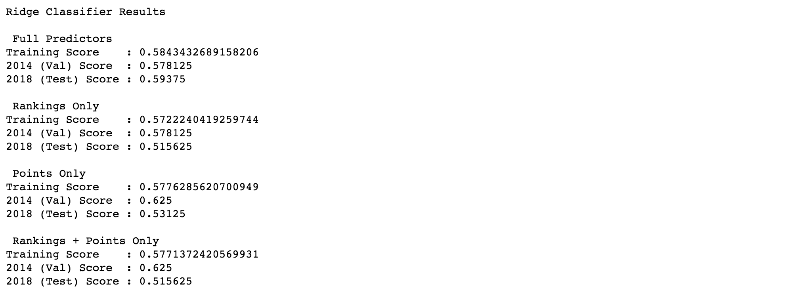
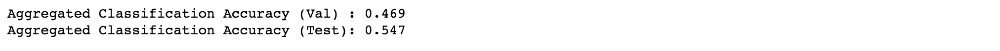
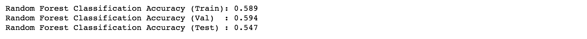
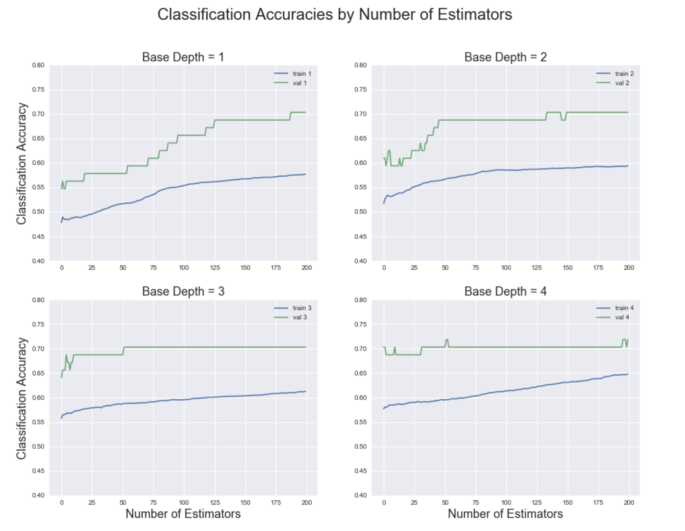
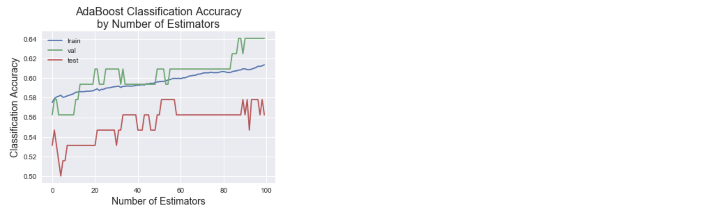
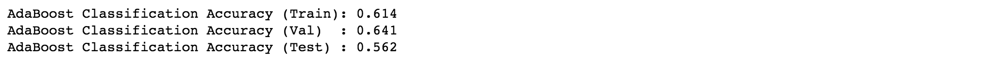
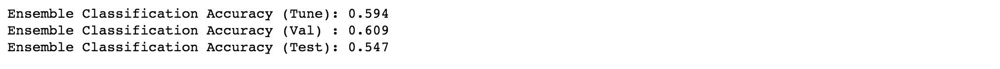
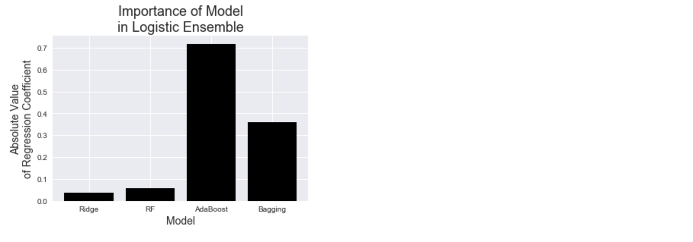
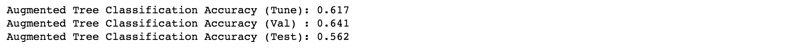
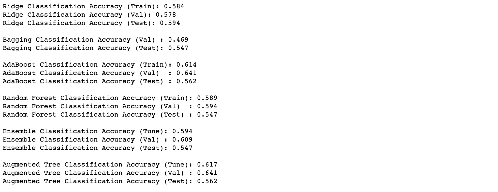

Final Models
Outline
I. Logistic Regression With Penalization
As an extension of a simple multinomial or One-vs-Rest logistic regression model, a new logistic regression model was trained on the combined WIGGO and FIFA data to fit the best decision boundary using a limited subset of predictors. To do this, Ridge Regression was run on the data to add a penalty term to the overall loss function that penalizes the model for having too many predictors.
Ridge Regression was used on four variations of the combined WIGGO and FIFA dataset:
- All Predictors (including all WIGGO and FIFA rankings and points)
- Only the WIGGO and FIFA rankings
- Only the WIGGO and FIFA points
- The WIGGO and FIFA rankings and points, but no other predictors
For each regression model, KFold cross-validation was performed using RidgeClassifierCV and KFold from sklearn. Each time, the cross-validation chose from a list of 16 Ridge shrinkage parameters (lambdas): {0.001, 0.005, 0.1, 0.5, 1, 5, 10, 50, 100, 150, 200, 250, 1000, 10000, 50000, 100000}. The results (chosen shrinkage parameters) of the 5-fold cross-validation on each data variation are shown below.
-
All Predictors:
-
Rankings Only:
-
Points Only:
-
Rankings and Points Only:
Finally, the fitted models were scored against the three sets of data: the training set, which includes all international matches except for the 2018 and 2014 FIFA World Cup matches, the validation set, which includes all matches for the 2014 FIFA World Cup, and the test set, which includes all matches for the 2018 FIFA World Cup (i.e. the project's prediction goal). The accuracy of each model with respect to each dataset can be seen below.
II. Ensemble Techniques
ON ALL PREDICTORS
i. Bagging
A Bagging model of 25 decision trees with max-depth of 4 predicting on bootsrapped samples of the training set was generated. Since the decision trees were fit on bootstrap samples, only the validation and test set accuracies are shown below.
ii. Random Forest
As a second ensemble model, a random forest classifier was fit with 25 estimators and a max-depth of 5. While this model performed significantly better than the Bagging model on the validation set (2014 World Cup), it had the same test set accuracy of 54.7%.
iii. AdaBoost (Boosting)
Building on the relative success of the random forest, an AdaBoost Boosting classifier was built with a random forest as the base classifier. This boosting model was fit with a max depth ranging from 1 to 4. The classification accuracies of each of the four AdaBoost variations as a function of the number of estimators can be seen below.
It is important to note that since the validation set is such a small set of data (Only 64 games are played at a FIFA World Cup), it is possible that the validation accuracy is higher than the training accuracy (as is the case above). While this won't always be the case, it is helpful to know that such variations are possible and that they don't necessarily constitute the theoretical validation accuracy for a larger validation set. The same is true for the test set, as it too only consists of 64 games.
After reviewing the plot above, it was decided that the final AdaBoost model should have a max-depth of 4, seeing as both the training and validation accuracies were the highest at that depth. Accordingly, the final AdaBoost model was used for prediction, generating the train, validation, and test accuracies seen below. The plot shows the classification accuracy as a function of the number of estimators while the final accuracy printed below the plot gives the accuracies at 100 estimators.
 iv. Combined Ensemble
In an effort to build off of the high accuracies of some of the ensemble methods, a meta-model was fit using the outputs of the Ridge Regression, Bagging, Random Forest, and AdaBoost models as the predictors. The meta-model used a simple logistic regression model to combine the four predictions into an output. While this increased the training and validation accuracies slightly, the test accuracy continued to hover around 55%. This is likely again attributable to the small sample size of the test set, which does not allow for us to measure the accuracy of a model as precisely as a larger test set would.
The coefficients of the meta-model confirmed that AdaBoost had been the best prediction method thus far, as its logistic regression coefficient in the meta-model was significantly higher than the other three models.
v. Augmented Ensemble Decision Tree
The final ensemble model was an augmented ensemble decision tree that included both the original predictors as well as the predictions (for each observation) of each of the four models used in the combined ensemble meta-model (i.e. Ridge Regression, Bagging, Random Forest, and AdaBoost). This model should perform better than the simple combined ensemble, as the model has both the raw match data as well as the predictions from other models. Indeed this augmented ensemble model did perform significantly better than any model before it, with high training, validation, and test accuracies, as can be seen below.
vi. Ensemble Models Summary
The final classification accuracies for all ensemble models can be seen below.
III. Neural Networks
The final sophisticated model is a fully-trained neural network with a more complicated network architecture than that of the baseline neural network model. Against using the keras python library, a neural network was generated that attempted to match the 37 input nodes (all predictors including either FIFA or WIGGO rankings and points) with a match outcome classification (Home Win, Draw, or Home Loss). The network
IV. Summary
| Data Set | Ridge Regression | Bagging | AdaBoost (Boosting) | Random Forest | Combined Ensemble | Augmented Ensemble | Neural Network (FIFA) | Neural Network (WIGGO) |
| Training | 58.4% | - | 61.4% | 58.9% | 59.4% | 61.7% | 56.7% | 57.7% |
| Validation | 57.8% | 46.9% | 64.1% | 59.4% | 60.9% | 64.1% | 56.0% | 58.1% |
| Test | 59.4% | 54.7% | 56.2% | 54.7% | 54.7% | 56.2% | 55.3% | 57.0% |